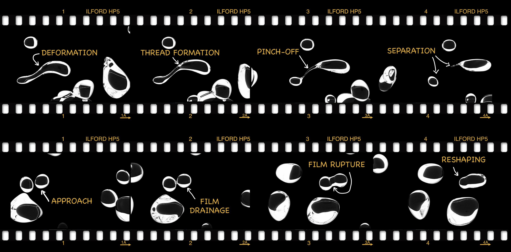

Welcome to my website. I am Assistant Professor (RTDa) at the University of Udine, and my work focuses on the physics and numerical simulation of turbulent multiphase flows, with particular emphasis on heat and mass transfer phenomena.
Turbulent multiphase flows are ubiquitous in both natural and industrial processes. Understanding, predicting, and controlling these complex systems is essential across a wide range of applications, including energy systems, environmental flows, chemical engineering, and advanced thermal management technologies. Through high-fidelity simulations, I investigate the intricate interactions between turbulence, interfaces, and phase-change.
My research aims to uncover the fundamental mechanisms governing the dynamics of drops, bubbles, and particles in turbulent flows, while also identifying universal behaviors across different flow configurations. I am also an active developer, building efficient and scalable solvers that leverage GPU acceleration.

GitHub: aroccon
ORCID: 0000-0002-1825-0097
Email: alessio.roccon[at]uniud.it
Email: alessio.roccon[at]tuwien.ac.at